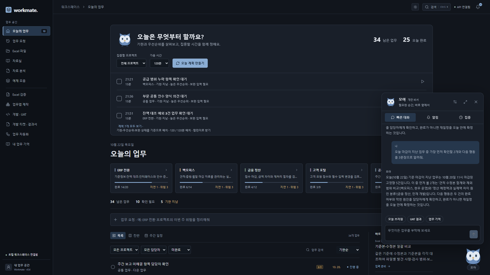
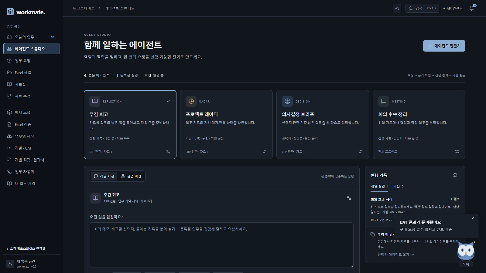

YOUR PERSONAL WORKSPACE
내 일을 기억하는
가장 가까운 비서.
해야 할 일, 흩어진 자료, 확인할 결과까지. Workmate는 업무의 맥락을 기억하고
개인 비서·전문 에이전트·업무 도구를 연결해 다음 행동으로 이어가는 공간입니다.


01개인 비서, 모아
Windows Mini는 브라우저 밖에서도 실행합니다. 전역 단축키와 말풍선 알림, 업무 기억·오늘 계획·집중 타이머를 한곳에서 사용합니다.
02전문 에이전트와 협업 미션
회의 후속 정리, 의사결정 브리프, 프로젝트 레이더, 주간 회고를 제공합니다. 같은 요청을 최대 4개 에이전트에 맡기고 개별 결과를 확인합니다.
03내 방식으로 반복하는 실행
지침·프로젝트·참고 문서·기억 사용을 프로필마다 정합니다. 실행 단계와 원문을 확인하고, 필요한 업무·기억만 선택해 저장하거나 HTML로 받습니다.
04Excel 업무 품질 검증
기준본과 수정본의 수식·입력·규칙 변경을 비교합니다. 셀별 이전 값과 이유를 확인하고, 검토한 수식은 원본을 보존한 사본에 복원합니다.
05티켓에서 UAT 결과서까지
티켓 요구사항에 따라 실제 화면을 검증·캡처합니다. 날짜·담당자·항목별 판정과 증거를 결과서·ZIP·첨부 메일 파일로 준비합니다.
06근거에서 다음 업무까지
문서 질의와 변경 영향, 저장된 업무의 보고서를 연결합니다. 선택한 후속 업무는 중복 없이 등록하고, 기존 기억과 충돌하면 기존 값을 유지합니다.
협업 미션: 같은 목표를 각 프로필의 분야와 자료 범위로 실행하고 결과를 함께 확인
4개 전문 프로필 + 8개 업무 도구
시작하기 · 온라인 또는 Windows 설치형. 개인 API 주소·키·모델을 연결하면 맥락 분석을 확장합니다. API 없이도 명시 문장 추출·업무 집계·Excel·지원 UAT를 실행합니다.
확인하기 · 원문 인용과 실행 기록을 함께 봅니다. Excel은 정적 검사, UAT는 생성 업무앱의 격리 환경 검증입니다. 메일 전달과 현업 인수 판단은 사용자가 수행합니다.